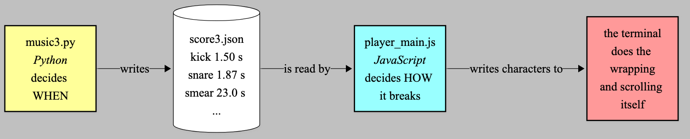
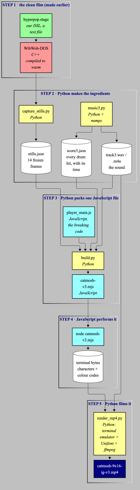
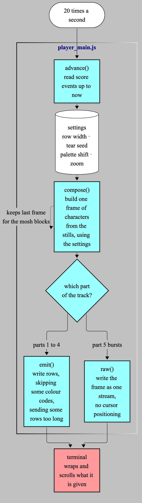
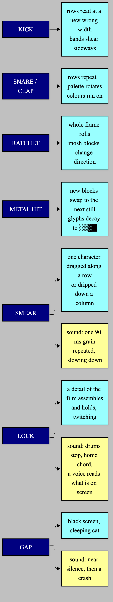

The short answer: yes, both Python and JavaScript. They never talk to each other while it plays. Python runs first and leaves files. JavaScript runs second and follows them. Python comes back at the end to film the result.
Colour key:
| Python | JavaScript | C++ / the terminal | our DSL | a file on disk |
The music program decides when. The player decides how it breaks. The only link between them is a file listing every drum hit and its time.

Five steps. The DSL only appears in step 1: it made the clean film that everything after it freezes and breaks.

This is player_main.js, the datamoshing part. It builds a frame of characters, then writes it to the terminal badly on purpose. The terminal does the wrapping and scrolling.

Dark blue is an event in the score. Light blue is what the picture does. Yellow is what the sound does at the same instant.
